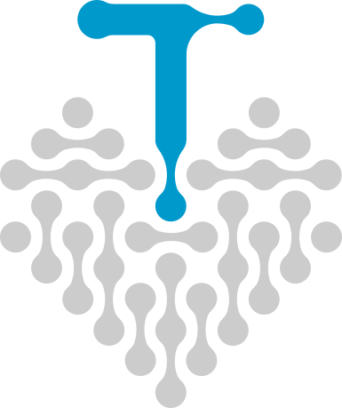

Node field
Distributed connection, not a single line. One feed, many terminations — the geometry the signet is built from.
Signet
Scroll
Revision 4 fixes the palette at #0099CC, #CCCCCC and
#FFFFFF. Everything below shows how the mark, the type and the
surfaces behave once those three values are locked — and where the system
needs a rule rather than a preference.
The signet reads as a node field on purpose. A fibre network behaves the same way — one source, a splitter, and a run that keeps branching until it reaches a socket. Six ideas sit underneath the shape:
Distributed connection, not a single line. One feed, many terminations — the geometry the signet is built from.
Signet
The literal strand — the medium Technik Net pulls, splices and terminates on every job, NE3 through NE5.
NE3 → NE5
Junctions, splice trays, TA sockets. The rounded terminals in the wordmark are drawn from the same vocabulary.
Splice · TA · Switch
Distribution cabinet to Gf-AP OneBox — the layer a network physically rides on, all the way to the end user.
NE4 · ZTV60
Blue is not decoration. It marks the segment that carries light. Grey is the same run before handover — dark fibre.
Dark → lit
How the mark travels off-screen: vehicle livery, hi-vis workwear, site signage. Placeholder framing until real photography exists.
Pending · photography
Three values, fixed. They are not interchangeable, and they never appear at equal weight in the same frame.
Live Blue
#0099CC
The only colour that carries meaning: lit fibre, live links, the “Net”. Full strength or absent — never tinted.
Duct Grey
#CCCCCC
Structure, not decoration: rules, dividers, dark fibre, and the “Technik” half of the wordmark.
Paper White
#FFFFFF
The ground. Holds the largest area on every surface so the blue stays an event rather than a wash.
Deep Ink · derived
#0A2733
Not a brand colour. A dark shade of Live Blue, used only for body copy where the three brand values cannot be read.
First in the palette and first in the eye. It picks the one thing on a surface that matters.
It divides and supports. It is never asked to be the subject of a frame.
Whatever the blue is not doing. The largest area, the quietest role.
The wordmark is drawn, not typeset. Everything around it is carried by two families: a geometric sans for headings and a neutral one for reading.
Headings — Sora
Glasfaser
Glasfaser
Glasfaser
Body — SUSE
NE3, NE4 und NE5 aus einer Hand.
NE3, NE4 und NE5 aus einer Hand.
NE3, NE4 und NE5 aus einer Hand.
“Technik” recedes on purpose. Set in Duct Grey, it names the trade; the blue “Net” names the service. Read together they are one word, read quickly they say Net. Sora and SUSE never imitate the drawn terminals.
One unit governs the whole lockup: u, the stroke weight. Every height, gap and terminal in the artwork resolves to a whole or half multiple of it — the same discipline the crews apply on site at ZTV60 tolerance.
One primary lockup and three reductions. Which one appears depends on the surface underneath it — never on preference.

Signet on patternFavicon and app icon. The lowercase t is the smallest readable reduction of the mark. Blue on white is the default; white on blue is used where the platform draws its own light background.
A single tile, derived from the node joints in the wordmark, repeating without a visible seam. It gives a surface a quiet technical texture without adding a colour.
The tile lives inside one colour family, roughly 4–8 % apart from its ground. It should never be readable from across a room.
It sits under content as a ground. It is not a graphic element and does not share a frame with the mark at equal contrast.
Large on vehicle and wall applications; small and near-invisible on screen — 440 px at 85 % opacity on this page.